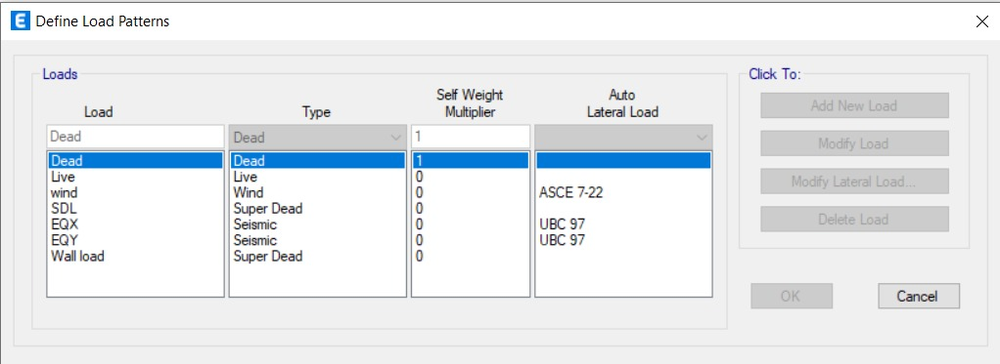
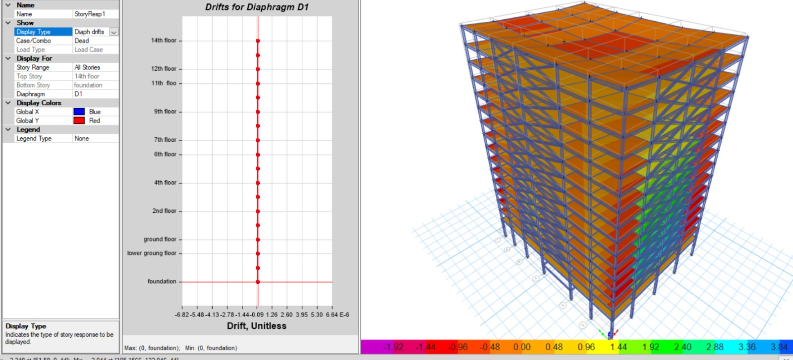
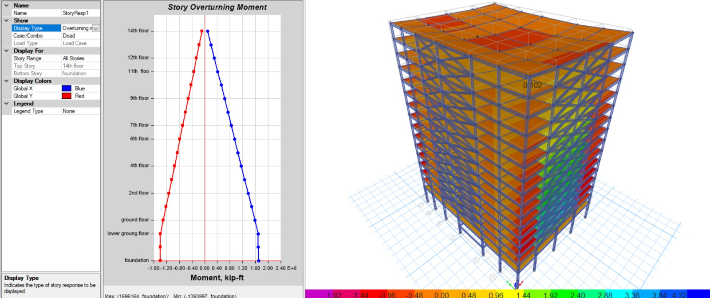
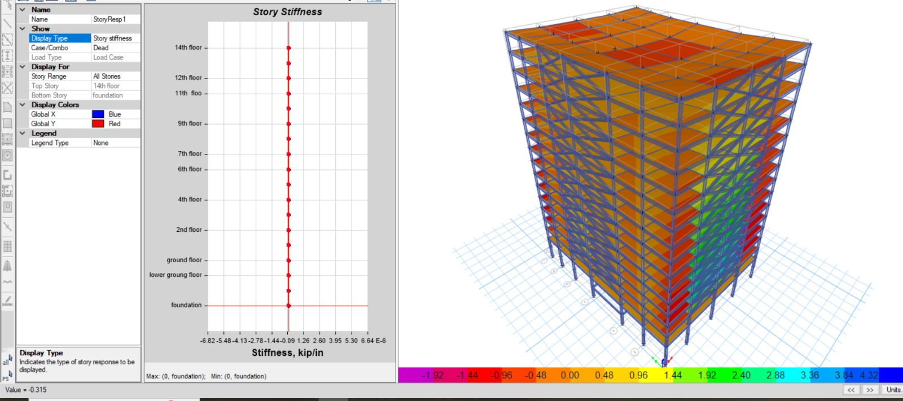
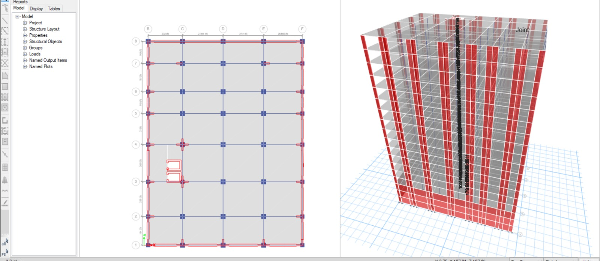
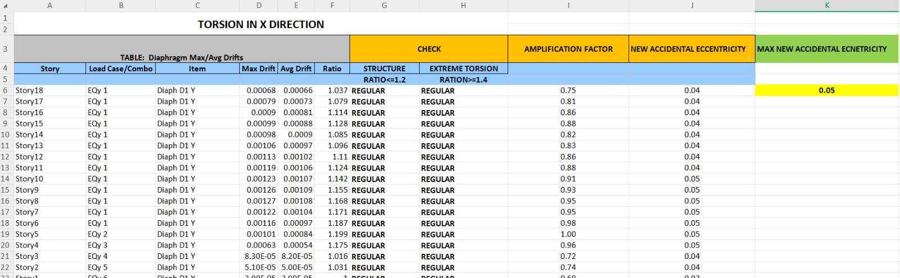
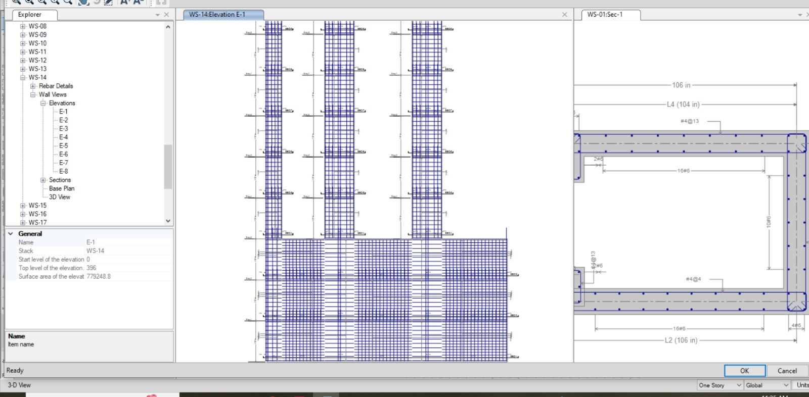
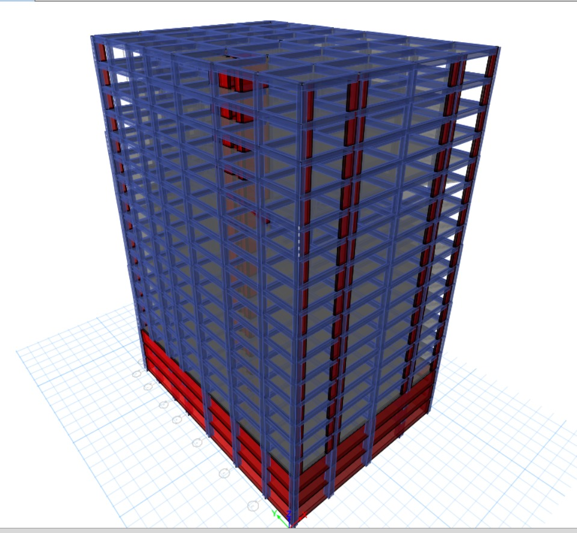
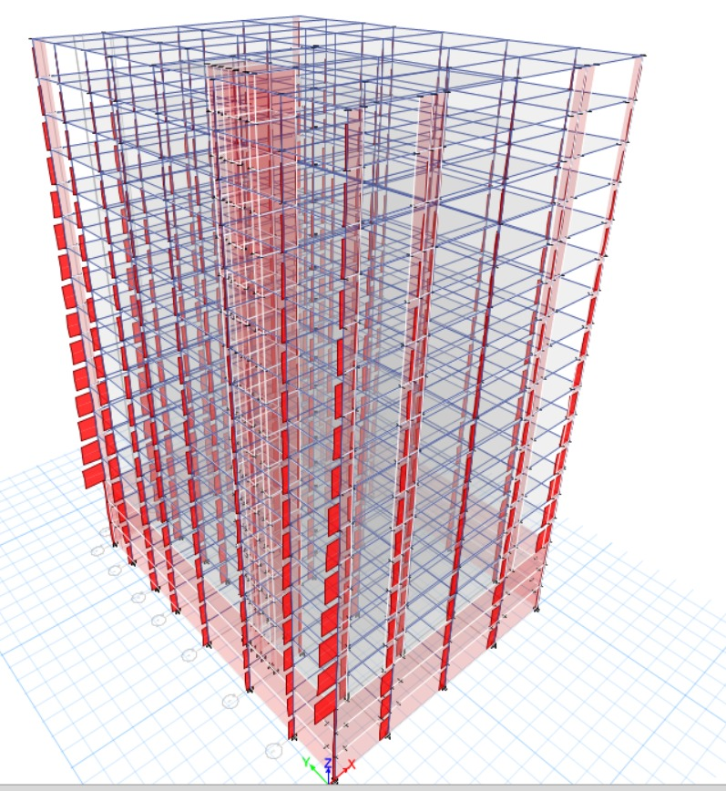
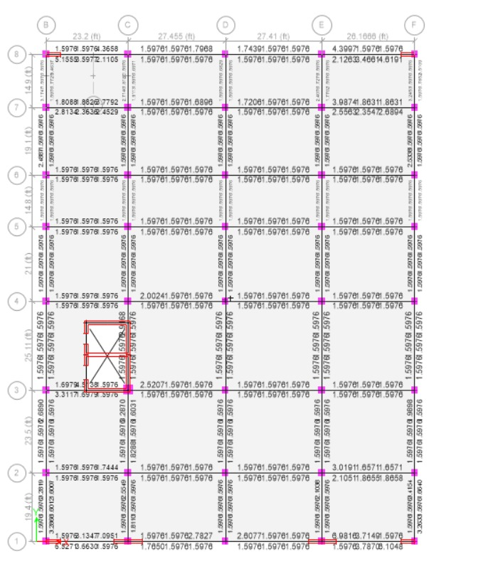

Seismic design verification — 14-story RC & steel building
A full lateral-design workflow for a 14-story mixed concrete-and-steel structure: floor plans coordinated in AutoCAD, the lateral model built and run in ETABS per ASCE 7-22, and every story's drift and torsion checked automatically through two Excel calculators built specifically for this job — so re-checking compliance after a model revision takes seconds, not a re-read of the whole report. Shear-wall reinforcement was then detailed stack by stack in Revit against the ETABS-verified results.
Seismic response analysis
ETABS · dead, live, wind & seismic (EQX/EQY) load cases





Automated code-compliance checkers
Excel & VBA · built for this job, reused on every revision

Reinforcement detailing
Revit · shear-wall stack WS-14



Architectural coordination
AutoCAD · grid and layout cross-checks

Objective
Verify that the building's lateral system meets code drift, torsion, and stiffness-irregularity limits, then carry those results directly into construction-ready shear-wall reinforcement drawings.
Standards referenced
ASCE 7-22 for seismic loads and drift limits; UBC 97 as a cross-check on the auto lateral load pattern.
Scope of work
- Coordinated architectural floor plans and the structural grid in AutoCAD before modeling
- Built the 14-story lateral model in ETABS with dead, live, wind, EQX/EQY and wall load cases
- Ran story displacement, diaphragm drift, overturning moment, and story-stiffness checks at every level
- Built an Excel/VBA calculator that flags any story exceeding the period-based drift limit automatically
- Built a second Excel checker for torsional irregularity — drift ratio, amplification factor, and accidental eccentricity — per ASCE 7-22
- Detailed and sectioned shear-wall reinforcement for stack WS-14 in Revit, coordinated against the ETABS-verified drift results